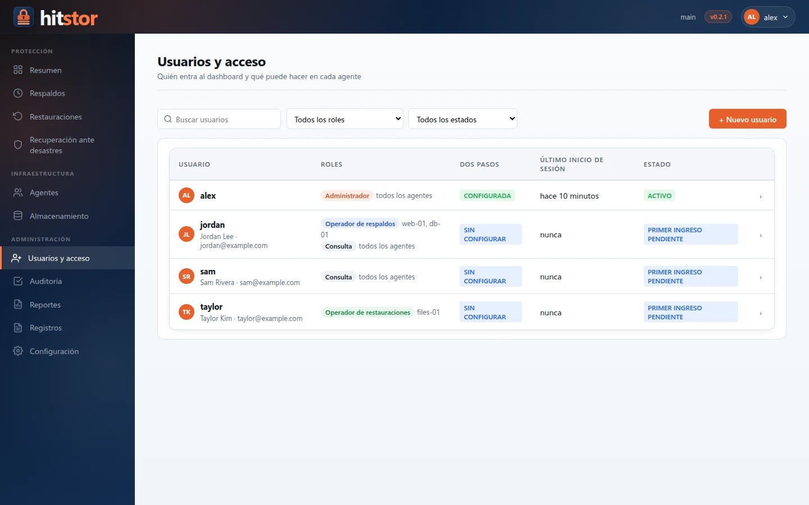
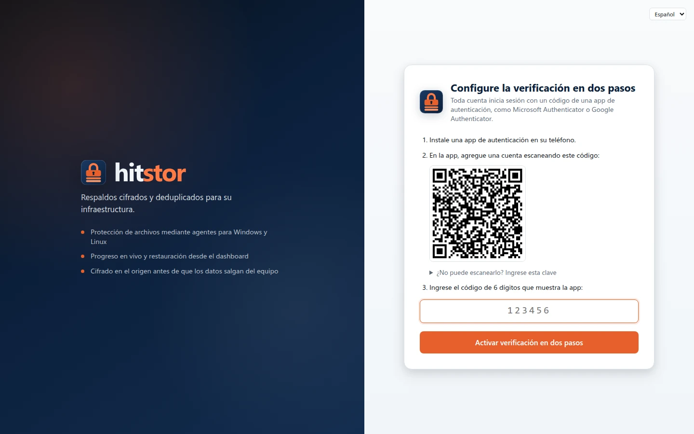
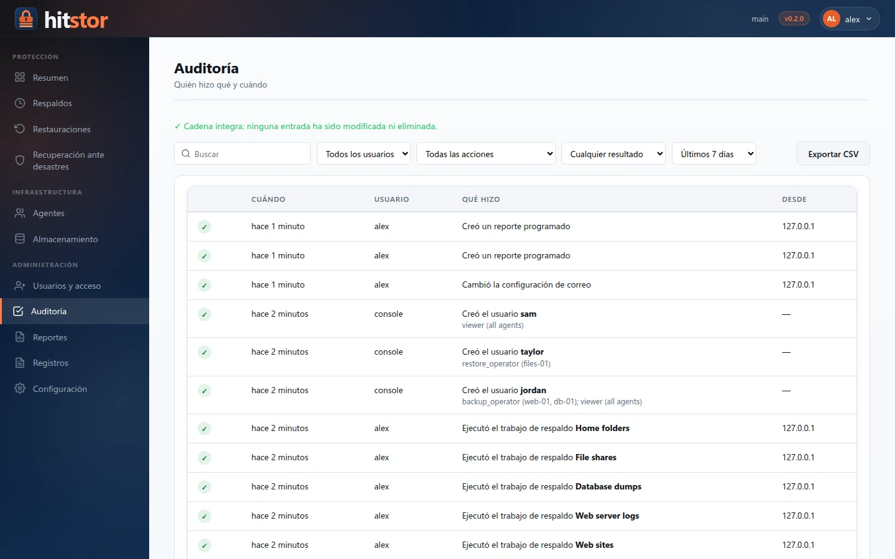

Usuarios y acceso¶
El dashboard usa cuentas personales. Cada persona inicia sesión con su propio usuario, su contraseña y un código de una app de autenticación, y solo ve y cambia lo que su rol permite.

Roles¶
| Rol | Puede |
|---|---|
| Administrador | Todo, en todos los agentes: usuarios, almacenamiento, configuración, reportes, eliminar instantáneas (snapshots), recuperación ante desastres. |
| Operador de respaldos | Crear, editar, programar, ejecutar y cancelar tareas de respaldo; suspender y reanudar agentes. No puede restaurar. |
| Operador de restauraciones | Explorar instantáneas y restaurarlas. No puede cambiar tareas. |
| Consulta | Ver tareas, resultados y registros. No cambia nada. |
Respaldar y restaurar son roles separados a propósito: quien restaura puede leer cualquier dato respaldado, así que asigne ese rol solo a quien lo necesite.
Cada rol, salvo Administrador, se asigna en todos los agentes o en una lista de agentes. Un operador de respaldos de web01 solo ve web01, sus tareas y sus resultados; las páginas que abarcan todos los agentes (Resumen, Almacenamiento, Recuperación ante desastres, Registros) requieren el rol en todos los agentes. Un usuario puede tener varios roles, por ejemplo operador de respaldos en dos agentes y consulta en todos.
Verificación en dos pasos¶

La verificación en dos pasos es obligatoria para todas las cuentas. En el primer inicio de sesión cada usuario:
- Instala una app de autenticación (Microsoft Authenticator, Google Authenticator, 1Password, Bitwarden...).
- Escanea el código QR que muestra el dashboard, o escribe la clave que aparece debajo.
- Ingresa el código de 6 dígitos para confirmar y guarda los 10 códigos de recuperación que se muestran a continuación. Cada código de recuperación permite iniciar sesión una vez cuando no se tiene el teléfono a mano.
Desde entonces, iniciar sesión pide la contraseña y luego un código. Cada código sirve una sola vez. En Mi cuenta el usuario puede generar nuevos códigos de recuperación (los anteriores dejan de funcionar) o pasar el autenticador a un teléfono nuevo.
Si un usuario pierde el teléfono y los códigos de recuperación, un administrador restablece su verificación en dos pasos (Usuarios → Administrar → Restablecer verificación en dos pasos) y el usuario la configura de nuevo en el siguiente inicio de sesión.
Contraseñas¶
- Al menos 12 caracteres y como máximo 128. Una frase de varias palabras es fácil de recordar y difícil de adivinar.
- Se rechazan las contraseñas de uso común y las que contienen el nombre de usuario.
- No hay reglas de composición ni vencimiento periódico, como recomienda NIST SP 800-63B; cambie la contraseña cuando haya un motivo.
- Las contraseñas se guardan como hashes argon2id.
Los administradores nunca eligen la contraseña de un usuario. Con el correo configurado, un usuario nuevo recibe un enlace de invitación y elige su contraseña él mismo. Sin correo, crear un usuario o restablecer una contraseña entrega una contraseña temporal: entréguela en persona o por otro canal. Sirve una sola vez: en el siguiente inicio de sesión el usuario elige su propia contraseña y, si es nuevo, configura el autenticador.
Correo¶
Con un servidor de correo saliente configurado en Configuración → Correo, el dashboard envía dos tipos de correo de cuenta (además envía los reportes programados):
- Invitación. Crear un usuario con dirección de correo le envía un enlace para elegir su contraseña; sirve una sola vez y vence a las 72 horas. Nadie, ni siquiera el administrador, ve nunca una contraseña temporal. Si el correo no se puede enviar, el dashboard dice por qué y muestra una contraseña temporal en su lugar.
- Restablecimiento de contraseña. ¿Olvidó su contraseña? en la página de inicio de sesión pide el nombre de usuario o la dirección de correo y envía un enlace para elegir una nueva contraseña, válido durante una hora. La página responde igual exista o no la cuenta. Un administrador también puede enviar el enlace (o una nueva invitación, a un usuario que nunca inició sesión) desde la página del usuario con Contraseña → Restablecer.
Perder un enlace en un buzón no es grave: cada uno sirve una sola vez, un enlace más nuevo reemplaza a los anteriores, y cambiar la contraseña, cambiar la dirección de correo o deshabilitar la cuenta los anula. Un usuario que configuró la verificación en dos pasos también debe escribir un código del autenticador (o un código de recuperación) para elegir una nueva contraseña, así que leer su correo no basta para apoderarse de la cuenta. No se puede pedir otro enlace de restablecimiento para la misma cuenta antes de dos minutos, y las solicitudes desde una misma dirección tienen un límite.
La dirección de Dirección del panel en los enlaces encabeza todos los enlaces; el dashboard nunca la toma de la solicitud, así que un encabezado Host falsificado no puede desviar los enlaces. Use el nombre con el que se llega al dashboard, por ejemplo https://backup.example.com:8421.
La dirección de cada usuario la fija un administrador, en la página del usuario o con hitstor serve user add --email; el usuario la ve en Mi cuenta. Dos usuarios no pueden compartir una dirección.
Enviar prueba envía un correo con la configuración del formulario, antes o después de guardarla, y muestra la respuesta del servidor cuando lo rechaza.
Un relay interno¶
Un relay en la red local que acepta correo de equipos conocidos no necesita credenciales. Elija Partir de: Relay interno, escriba el nombre o la dirección del relay y la dirección del remitente, y autorice en el relay la dirección del servidor de HitStor. La seguridad de conexión Ninguna envía sin cifrar: úsela solo en una red de confianza. Use STARTTLS si el relay lo ofrece; con un certificado autofirmado, marque Aceptar cualquier certificado del servidor.
Microsoft 365 (Exchange Online)¶
Exchange Online ya no acepta contraseñas para SMTP, así que HitStor inicia sesión como una aplicación registrada con OAuth 2.0 (credenciales de cliente) y envía como un buzón. Un buzón compartido es un buen remitente: no necesita licencia ni tiene contraseña propia.
- En el centro de administración de Microsoft Entra, en Registros de aplicaciones → Nuevo registro, registre una aplicación solo para su organización. Anote su Id. de aplicación (cliente) y su Id. de directorio (inquilino).
- En Permisos de API → Agregar un permiso → API que usa mi organización → Office 365 Exchange Online → Permisos de aplicación, agregue
SMTP.SendAsAppy luego Conceder consentimiento de administrador. - En Certificados y secretos, cree un secreto de cliente y copie su valor (se muestra una sola vez). Anote cuándo vence y renuévelo antes.
-
En Exchange Online PowerShell, registre la entidad de servicio de la aplicación y permítale usar el buzón remitente. El id. de objeto es el de la aplicación en Aplicaciones empresariales, no en Registros de aplicaciones:
Connect-ExchangeOnline New-ServicePrincipal -AppId <client-id> -ObjectId <enterprise-app-object-id> -DisplayName "HitStor" Add-MailboxPermission -Identity hitstor@example.com -User <enterprise-app-object-id> -AccessRights FullAccess # Solo si SMTP AUTH está desactivado para la organización o el buzón: Set-CASMailbox -Identity hitstor@example.com -SmtpClientAuthenticationDisabled $false -
En HitStor, elija Partir de: Microsoft 365 (
smtp.office365.com, puerto 587, STARTTLS), escriba el id. de inquilino, el id. de cliente y el secreto, el buzón como dirección del remitente, y envíe una prueba.
El servidor necesita llegar a login.microsoftonline.com:443 (para el token) y a smtp.office365.com:587. Un error que empieza por AADSTS viene de Microsoft Entra (inquilino, id. de cliente o secreto incorrectos, o un secreto vencido); 535 5.7.3 significa que Exchange rechazó la aplicación para ese buzón (paso 4).
Sesiones y bloqueo¶
- Una sesión termina tras 30 minutos sin actividad (15 para administradores) y, en todo caso, a las 12 horas. Solo cuenta como actividad lo que hace el usuario: abrir páginas, escribir, hacer clic. Las actualizaciones automáticas no cuentan, así que una página abierta en un equipo desatendido igual expira. Dos minutos antes, el dashboard avisa y ofrece seguir conectado.
- Eliminar usuarios, cambiar roles, restablecer contraseñas, eliminar instantáneas, depurar el repositorio, recuperar un servidor y cambios similares vuelven a pedir la contraseña y un código si el último inicio de sesión fue hace más de 15 minutos.
- Tras 10 contraseñas o códigos incorrectos la cuenta se bloquea 15 minutos. Los fallos repetidos desde una misma dirección también se frenan.
- Mi cuenta lista las sesiones abiertas del usuario y permite cerrar cualquiera. Los administradores pueden cerrar las sesiones de cualquier usuario en Usuarios.
El primer administrador¶
Al actualizar un servidor desde una versión con una única contraseña de dashboard, el dashboard abre en Cree el primer administrador. Ingrese la contraseña actual del dashboard (la de serve_dashboard_password, o la que se imprimió en el registro del servidor) y elija el usuario y la contraseña del administrador. Luego configure el autenticador. Desde ese momento la contraseña compartida ya no permite iniciar sesión.
Las cuentas se guardan junto al registro de agentes en el primer repositorio (por orden alfabético de nombre), en users.json, cifradas con la clave del repositorio. Mientras el servidor no tenga repositorio, el dashboard sigue usando la contraseña compartida.
Administrar usuarios¶
Los administradores gestionan las cuentas en Usuarios y acceso. La lista se puede buscar y filtrar por rol y estado; cada fila abre la ficha del usuario:
- Roles y agentes: cada rol con su explicación, en todos los agentes o en algunos. En resumen dice en lenguaje llano qué puede hacer el usuario.
- Sesiones: dónde tiene la sesión iniciada; se puede cerrar cualquiera.
- Actividad: sus últimas entradas en la auditoría.
- Cuenta: nombre completo, estado, y restablecer la contraseña o la verificación en dos pasos.
- Zona de peligro: desactivar al usuario, o eliminarlo escribiendo su nombre de usuario.
El último administrador activo no puede eliminarse, desactivarse ni perder el rol.
Desde la consola del servidor¶
hitstor serve user administra las cuentas directamente en el servidor, por ejemplo cuando ningún administrador puede iniciar sesión. Ejecútelo con la misma configuración y contraseña de repositorio que el servicio; los cambios se aplican de inmediato al servidor en ejecución.
# Crear un administrador; imprime una contraseña temporal
hitstor serve user add maria --grant admin --display-name "Maria Perez" --email maria@example.com
# Un operador de respaldos de dos agentes que además puede consultar todo
hitstor serve user add ops1 --grant backup_operator=web01,db01 --grant viewer
hitstor serve user list
hitstor serve user grant ops1 --grant restore_operator=db01 # reemplaza los roles
hitstor serve user passwd maria # nueva contraseña temporal, cierra sesiones
hitstor serve user reset-2fa maria # configurar de nuevo el autenticador
hitstor serve user disable ops1
hitstor serve user enable ops1 # también levanta un bloqueo
hitstor serve user remove ops1
Auditoría¶
Auditoría (administradores) lista los inicios de sesión, intentos fallidos, cambios de usuarios, respaldos, restauraciones, almacenamiento y configuración, y las solicitudes denegadas, con usuario, dirección y hora, en frases legibles. Se puede filtrar por usuario, tipo de acción, resultado y período, y exportar a CSV. Cada entrada lleva el hash de la anterior, de modo que editar o borrar una entrada rompe la cadena y la página indica dónde. El registro es audit.log, junto a users.json; los cambios hechos con hitstor serve user aparecen con el usuario console.
